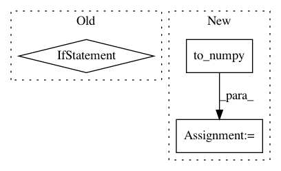

3d0c71243d9a1d2b3cd342ab21b5bbd98d48354e,pyannote/audio/embedding/approaches/triplet_loss.py,TripletLoss,batch_negative,#TripletLoss#Any#Any#,211
Before Change
anchors, positives, negatives = [], [], []
if distances.is_cuda:
distances = squareform(distances.data.cpu().numpy())
else:
distances = squareform(distances.data.numpy())
y = np.array(y)
for anchor, y_anchor in enumerate(y):
After Change
anchors, positives, negatives = [], [], []
distances = squareform(self.to_numpy(distances))
y = np.array(y)
for anchor, y_anchor in enumerate(y):
In pattern: SUPERPATTERN
Frequency: 3
Non-data size: 3
Instances
Project Name: pyannote/pyannote-audio
Commit Name: 3d0c71243d9a1d2b3cd342ab21b5bbd98d48354e
Time: 2018-06-29
Author: bredin@limsi.fr
File Name: pyannote/audio/embedding/approaches/triplet_loss.py
Class Name: TripletLoss
Method Name: batch_negative
Project Name: DistrictDataLabs/yellowbrick
Commit Name: 5d81bc9e8e19ab31f3e85f88207538e9f478d7d6
Time: 2019-07-04
Author: rebeccabilbro@users.noreply.github.com
File Name: tests/test_classifier/test_prcurve.py
Class Name: TestPrecisionRecallCurve
Method Name: test_quick_method_with_test_set
Project Name: pyannote/pyannote-audio
Commit Name: 3d0c71243d9a1d2b3cd342ab21b5bbd98d48354e
Time: 2018-06-29
Author: bredin@limsi.fr
File Name: pyannote/audio/embedding/approaches/triplet_loss.py
Class Name: TripletLoss
Method Name: batch_hard